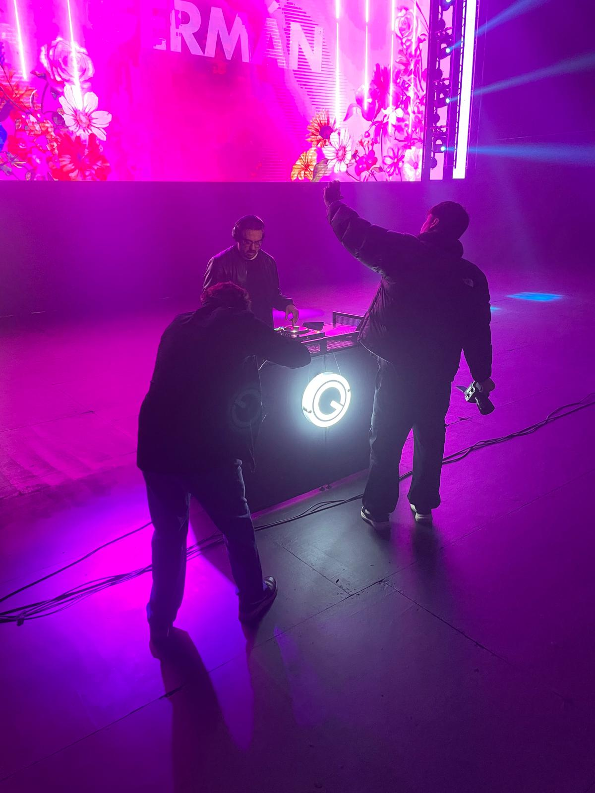

PRESS KIT / EPK — 2026
GERMÁN OSORIO


Bio
Bio
Germán empezó a fines de los 90 en Iglesias Audio y Luces, donde aprendió sonido, iluminación y a trabajar en shows, TV y eventos sociales. Desde entonces construyó más de 20 años de carrera como DJ y musicalizador, con residencias en El Patio, Sanata Fest, Sofitel Carrasco, W Lounge y clubes de Atlántida y Maldonado, entre otros.
En paralelo desarrolló su faceta de productor musical y de remixes, siendo nominado a los Premios Graffiti. Trabajó también en radio como editor y encargado de grabaciones, diseñando además la identidad institucional de la emisora y sus programas. En TV, trabajó en grandes producciones como "La Voz Uruguay" y "Got Talent", a cargo de la coordinación musical para los vivos y la edición del programa.
Germán started in the late 90s at Iglesias Audio y Luces, learning sound, lighting and working shows, TV and social events. Since then he's built a 20+ year career as a DJ and musicalizer, with residencies at El Patio, Sanata Fest, Sofitel Carrasco, W Lounge and clubs across Atlántida and Maldonado, among others.
In parallel he developed his work as a music producer and remixer, earning a Graffiti Awards nomination. He also worked in radio as an editor and recordings lead, designing the station's institutional identity along with its shows. In TV, he worked on major productions like "La Voz Uruguay" and "Got Talent," handling live music coordination and program editing.
Datos clave
Key facts
- NombreNameGermán Osorio
- BaseBased inMontevideo, Uruguay
- RolesRolesDJ · Productor · Sonido · RadioDJ · Producer · Sound · Radio
- TrayectoriaCareer+20 años20+ years
- Residencia actualCurrent residencyEl Patio (desde 2006)El Patio (since 2006)
- ReconocimientosRecognitionNominado, Premios GraffitiGraffiti Awards nominee
- IdiomasLanguagesEspañol, English
Fotos & logo
Photos & logo


* Fotos en alta resolución y logo en PNG/SVG disponibles a pedido por mail.
* High-res photos and logo (PNG/SVG) available on request by email.